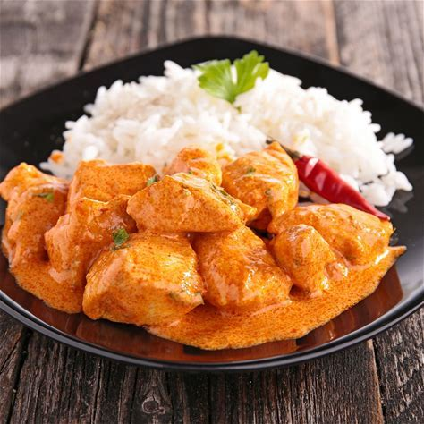

Le Colombo de Poulet
Incontournable de la table antillaise, le colombo de poulet est un ragoût réconfortant qui marie à la perfection épices douces et légumes locaux (aubergines, pommes de terre, giraumon).
Hérité des vagues d'immigration indienne au XIXᵉ siècle, ce plat emblématique s'est enraciné dans l'identité créole pour devenir le symbole des repas familiaux et festifs de l'île.
Qu’est-ce que le Colombo de poulet ?
Le colombo de poulet est un ragoût de poulet mijoté longuement avec des épices, des légumes et une sauce parfumée, qui lui donne toute sa richesse. Ce plat est apprécié pour son goût savoureux, légèrement épicé et très parfumé, qui reflète le métissage culturel des îles des Caraïbes.
L’ingrédient principal est la poudre de colombo, un mélange d’épices typique composé généralement de curcuma, cumin, coriandre, fenugrec, graines de moutarde et parfois de piment. Ce mélange trouve son origine dans les influences indiennes apportées par les travailleurs engagés. Au fil du temps, cette base a été adaptée aux produits locaux pour donner naissance à une recette unique.
La préparation commence par l'assaisonnement du poulet avec de l’ail, de l’oignon, du thym et du jus de citron vert. Le poulet est ensuite saisi dans une marmite, puis on ajoute les épices, du bouillon et les légumes traditionnels (courgettes, aubergines, pommes de terre ou christophines).
La cuisson lente permet au poulet de devenir incroyablement tendre et imprégné d’épices, tandis que la sauce s'épaissit pour devenir onctueuse. Il est traditionnellement servi avec du riz blanc pour absorber cette sauce parfumée.